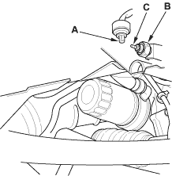
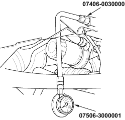

- Remove the YEL/RED wire (A) from the engine oil pressure switch (B).

- Check for continuity between the positive terminal (C) and the engine (ground). There should be continuity with the engine stopped. There should be no continuity with the engine running.
- If the switch fails to operate, check the engine oil level. If the engine oil level is OK, check the engine oil pressure. If the oil pressure is OK, replace the oil pressure switch.

Special Tools Required
- Oil pressure gauge attachment, 07406-0030000
- Oil pressure gauge, 07506-3000001
If the low oil pressure indicator stays on with the engine running, check the engine oil level. If the oil level is correct:
- Connect a tachometer or a Honda PGM Tester.
- Remove the engine oil pressure switch and install the special tools.

- Start the engine. Shut it off immediately if the gauge registers no oil pressure. Repair the problem before continuing.
- Allow the engine to reach operating temperature (fan comes on at least twice). The pressure should be:
Engine Oil Temperature:
80°C (176°F)
Engine Oil Pressure:
At Idle:
70 kPa (0.7 kgf/cm2, 10 psi) minimum
At 3,000 rpm (min-1):
300 kPa (3.1 kgf/cm2, 44 psi) minimum
- If the oil pressure is NOT within specification, inspect the following items.
- Check the oil strainer for clogging.
- Check the oil pump (see page 8-10).